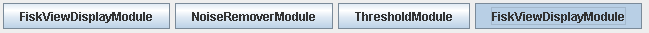

This section describes how intermediate results may be displayed in KORONA and KORONA relay. This functionality is typically used during the creation of new KORONA module setups. One FishViewDisplayModule is inserted prior to the modules to be investigated, and another FishViewDisplayModule is placed after.

The FishViewDisplayModule is used also in Example 1, Example 2, Example 3.